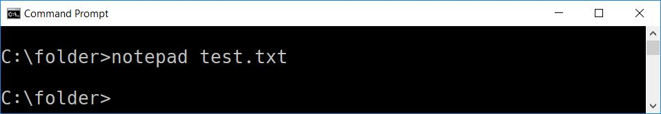

Command Prompt
1. Listing files in the directory
dir
2. Change a drive
3. Moving into a directory
cd {path}\{directory name}
4.1. Make a directory
mkdir {directory name}
4.2. Make subdirectories
mkdir {path}\{directory name}
5. Rename a directory
ren {old name} {new name}
6. Remove a directory
rd {directory name}
7. Copy a file
copy {source} {destination}
8. Create a file
copy con {file name}
9. Copy folders
xcopy /s {source} {destination}
10.1. Delete all files in the folder
del {folder which consists files}
10.2. Delete a file
del {file name}
11. Lunch an application
Just type the name of the application with {file name}


12. All commands are available in the help
Thank you!